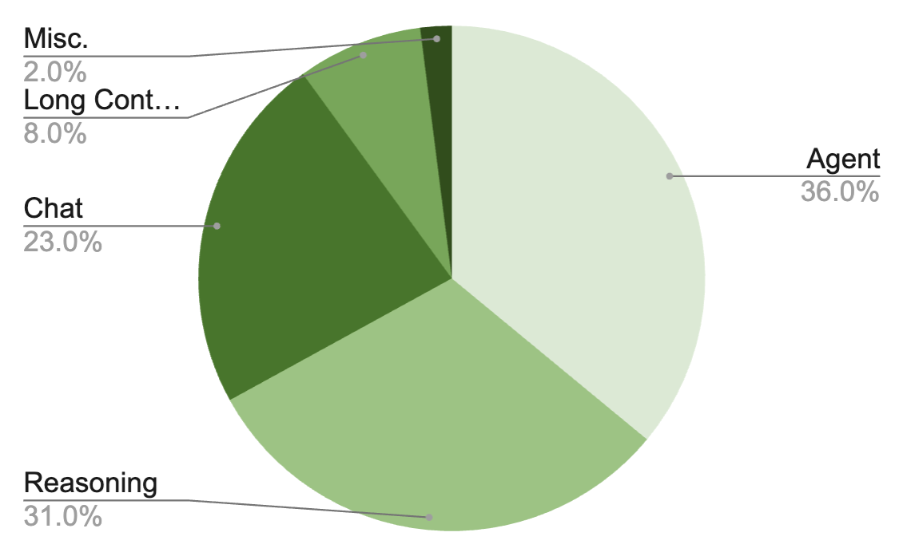

Stage 1: Supervised Fine-Tuning (SFT)#
This stage fine-tunes the pretrained Nemotron 3 Super model for instruction following using Megatron-Bridge.
Training Methodology#
Chat Template: The chat template is identical to Nemotron 3 Nano.
Training Framework: SFT is implemented using Megatron-Bridge’s
finetune()entry point, which loads a pretrained checkpoint and handles the training loop with role-based loss masking. See Training Entry Points for implementation details.
Two-Stage SFT Loss#
Nemotron 3 Super uses a novel two-stage SFT loss procedure. The model is supervised only on output (assistant) tokens, with prompt tokens masked.
Stage 1: Token-level (global) average. The loss averages over all output tokens in the packed global batch:
This corresponds to summing output-token log probabilities across all conversations and normalizing by the total number of output tokens.
Stage 2: Sample-level average. The loss then switches to a per-conversation normalized loss averaged equally across conversations:
This stage reduces the dominance of long outputs by normalizing each conversation by its own output-token count before averaging across the batch.
The switch from token-level to sample-level loss is configured in the recipe YAML (config/default.yaml).
MTP During SFT#
The shared-weight MTP head from pretraining is continued during SFT to preserve both the accuracy benefits of multi-step prediction and the inference-time gains from speculative decoding. Two MTP layers with shared parameters are trained using a scaled auxiliary loss (MTP loss scaling factor 0.3) computed with per-token loss.
Data Preparation Pipeline#
Before training, chat conversations are transformed into training-ready sequences through several stages:
%%{init: {'theme': 'base', 'themeVariables': { 'primaryBorderColor': '#333333', 'lineColor': '#333333', 'primaryTextColor': '#333333'}}}%%
flowchart LR
subgraph prep["Data Preparation"]
direction LR
chat["OpenAI Chat<br/>Format"] --> template["Chat<br/>Template"]
template --> chunks["Role-Labeled<br/>Chunks"]
chunks --> tok["Tokenization"]
tok --> mask["Loss Mask<br/>(role-based)"]
mask --> pack["Packing"]
pack --> roll["Mask Rolling"]
end
roll --> npy["Parquet Output"]
style chat fill:#e3f2fd,stroke:#2196f3
style template fill:#e3f2fd,stroke:#2196f3
style chunks fill:#e3f2fd,stroke:#2196f3
style tok fill:#f3e5f5,stroke:#9c27b0
style mask fill:#f3e5f5,stroke:#9c27b0
style pack fill:#fff3e0,stroke:#ff9800
style roll fill:#fff3e0,stroke:#ff9800
style npy fill:#e8f5e9,stroke:#4caf50
Stage |
What Happens |
|---|---|
OpenAI Chat Format |
Input messages with |
Chat Template |
Renders messages using the Jinja chat template (identical to Nemotron 3 Nano) |
Role-Labeled Chunks |
Splits rendered text back into chunks, each tagged with its source role |
Tokenization |
Converts text chunks to token IDs |
Loss Mask |
Builds mask: |
Packing |
Multiple sequences packed into fixed-length bins (4096 tokens) |
Mask Rolling |
Shifts mask by 1 position for next-token prediction alignment |
For data preparation implementation, see Recipe Source:
src/nemotron/recipes/super3/stage1_sft/data_prep.py
Loss Masking#
Loss masking determines which tokens contribute to the training loss. In SFT, we only want the model to learn to generate responses—not to predict prompts or system instructions.
Role |
Loss Mask |
Training Signal |
|---|---|---|
|
0 |
Ignored (instructions) |
|
0 |
Ignored (prompts) |
|
1 |
Learned (responses) |
Packed Sequences#
Individual chat conversations vary in length. Packing concatenates multiple conversations into a single fixed-length sequence (default 4096 tokens), maximizing GPU utilization.
The packed sequence format stores everything Megatron-Bridge needs for training:
Field |
Description |
|---|---|
|
Concatenated token IDs from multiple conversations |
|
Rolled mask indicating which positions contribute to loss |
|
Boundary indices marking where each original conversation starts within the pack |
Megatron-Bridge uses seq_start_id boundaries for variable-length attention (preventing cross-conversation attention leak) and FlashAttention optimization.
SFT Data Domains#

The SFT dataset covers 15+ domains across 7M total samples:
Reused from Nano3#
Domain |
Description |
|---|---|
Chat |
General conversational data |
Infinibyte |
Cross-domain synthesis |
Formal Proofs |
Mathematical proof generation |
Refreshed with New Teachers (DeepSeek v3.2, Kimi K2)#
Domain |
Description |
|---|---|
Competition Math |
Competitive mathematics problems |
Competition Code |
Competitive programming problems |
Conversational Tool Use |
Multi-turn tool-using interactions (fully rebuilt pipeline: scaled from 5 domains/15K conversations in Nano3 to 838 domains/279K conversations) |
Multilingual |
Translations to 6 languages (DE, ES, FR, IT, JA, ZH) with format compliance post-editing |
Science |
Scientific reasoning |
New Domains#
Domain |
Description |
Scale |
|---|---|---|
Software Engineering |
Coding tasks from GitHub issues (SWE-Gym, R2E-Gym, SWE-rebench) distilled via OpenHands with Qwen3-Coder-480B |
— |
Agentic Programming |
Agentic CLI tasks: solution synthesis, SWE tasks, web development across Codex/OpenCode/Qwen Code CLI harnesses |
~28K tasks |
Long Context |
Multi-document QA at 128K–512K context with multi-hop reasoning (4–7 retrieval steps) + 7 synthetic sequential reasoning tasks |
— |
Financial Reasoning |
Template-based SDG from SecQue benchmark across S&P 500 companies and fiscal years 2019–2024 |
366K QA pairs |
CUDA |
Kernel generation, repair, and optimization from DeepSeek-R1/GPT-OSS-120B with CUDA evaluation validation |
100K samples |
Safety |
Diverse prompts (content safety, jailbreak, over-safety, bias, prompt injection, copyright) with deliberative alignment reasoning traces |
— |
Search |
Multi-hop search agent trajectories grounded in Wikidata knowledge graph walks (4–8 hops, ~12 tool calls per trajectory) |
~7K records |
Terminal Use |
Terminal skill taxonomy with synthetic + adapted tasks, using DeepSeek-V3.2 in Dockerized agentic execution loop |
84K samples |
SQL |
Text-to-SQL across MySQL/PostgreSQL/SQLite, 60 industries, ~700 topics, 90 SQL concept buckets |
96.5K records |
Reasoning Control#
Nemotron 3 Super supports three reasoning modes:
Mode |
Description |
|---|---|
Reasoning-off |
No reasoning traces (3% of samples have reasoning stripped) |
Regular reasoning |
Standard chain-of-thought reasoning |
Low-effort reasoning |
New: shorter reasoning traces generated by GPT-OSS-120B low-effort mode (2% of SFT data) |
Both regular and low-effort modes support inference-time budget control. After the main SFT stage, a short semi-on-policy SFT stage (350 steps, where rollouts are collected from the current model checkpoint) fine-tunes budget control by collecting rollouts and truncating 12% of reasoning traces to random reasoning budgets.
Hyperparameters#
Full SFT (default)#
Parameter |
Value |
|---|---|
Learning Rate |
1e-5 (constant after warmup) |
LR Warmup |
30,000 samples (linear ramp to constant LR) |
Sequence Packing |
Up to 256K context |
Global Batch Size |
64 |
Micro-Batch Size |
1 |
Pack Size |
4096 tokens |
Loss Masking |
Role-based (assistant tokens only) |
Loss Normalization |
Two-stage (token-level then sample-level) |
Optimizer |
AdamW (beta1=0.9, beta2=0.95) |
Weight Decay |
0.1 |
Precision |
BF16 mixed |
MTP Loss Scaling |
0.3 |
LoRA Fine-Tuning#
Parameter |
Value |
|---|---|
Learning Rate |
1e-4 |
Target Modules |
|
Parallelism |
TP=1, EP=1 |
Troubleshooting#
Common data preparation errors and solutions:
Error |
Cause |
Solution |
|---|---|---|
Empty sequences after processing |
All tokens masked (no assistant content) |
Verify input data contains assistant responses |
Template rendering mismatch |
Tokenizer BPE splits differ from template expectations |
Ensure tokenizer model matches the one used during template creation |
Sequences truncated excessively |
Many conversations exceed |
Consider increasing |
Debugging tips:
Use
--sample 100to test data preparation on a small subsetCheck
metadata.jsonoutput for statistics on filtered/truncated sequencesReview W&B artifacts for lineage tracking and validation metrics
Recipe Execution#
Quick Start#
// 1. Prepare data (apply chat templates, tokenize to Packed Parquet)
$ uv run nemotron super3 data prep sft --run YOUR-CLUSTER
// 2. Run SFT
$ uv run nemotron super3 sft --run YOUR-CLUSTER
Note: The
--run YOUR-CLUSTERflag submits jobs via NeMo-Run. See Execution through NeMo-Run for setup.
Direct Script Execution (Megatron-Bridge)#
For direct execution outside this CLI, use the scripts in the Megatron-Bridge repository:
# Clone the repository and checkout the super-v3 branch
git clone https://github.com/NVIDIA-NeMo/Megatron-Bridge.git
cd Megatron-Bridge
git checkout super-v3
# Full-parameter SFT (inside container on compute node)
torchrun --nproc-per-node=8 examples/models/nemotron_3/finetune_nemotron_3_super.py \
logger.wandb_project=your_project \
logger.wandb_entity=nvidia \
logger.log_interval=5 \
checkpoint.save=/path/to/checkpoints \
checkpoint.load=/path/to/checkpoints \
checkpoint.pretrained_checkpoint=/path/to/pretrained/ckpt \
checkpoint.save_interval=50 \
train.global_batch_size=16 \
train.train_iters=200 \
scheduler.lr_warmup_iters=10 \
model.tensor_model_parallel_size=4 \
model.sequence_parallel=True
# LoRA fine-tuning
torchrun --nproc-per-node=8 examples/models/nemotron_3/finetune_nemotron_3_super.py \
--peft lora \
checkpoint.pretrained_checkpoint=/path/to/pretrained/ckpt \
train.global_batch_size=4 \
train.train_iters=200 \
model.tensor_model_parallel_size=4 \
model.context_parallel_size=2 \
model.sequence_parallel=True
See the Megatron-Bridge Nemotron 3 Super documentation for detailed configuration options.
Configuration#
File |
Purpose |
|---|---|
|
Production configuration (full SFT) |
|
Quick testing configuration |
|
Data preparation settings |
Data Preparation#
The data_prep.py script processes OpenAI-format chat data into packed sequences with role-based loss masking. See Data Preparation Module for detailed documentation.
CLI Command#
uv run nemotron super3 data prep sft [options]
Option |
Description |
|---|---|
|
Execute on Slurm via NeMo-Run |
|
Limit rows per dataset (for testing) |
|
Force re-run, ignoring cache |
Output#
output/stage1_sft/
├── blend.json
├── splits/
│ ├── train/
│ │ ├── shard_000000.parquet
│ │ └── ...
│ ├── valid/
│ └── test/
└── runs/{run_hash}/
└── datasets/{name}/{hash}/
The output is registered as a W&B Artifact (SFTDataArtifact-sft) for lineage tracking.
Training#
CLI Command#
uv run nemotron super3 sft [options] [overrides...]
Override Examples#
# More training iterations
uv run nemotron super3 sft train.train_iters=5000
# Different learning rate
uv run nemotron super3 sft optimizer.lr=1e-5
# Load specific pretrained checkpoint
uv run nemotron super3 sft checkpoint.pretrained_checkpoint=/path/to/checkpoint
Running with NeMo-Run#
Configure execution profiles in env.toml:
[wandb]
project = "nemotron"
entity = "YOUR-TEAM"
[YOUR-CLUSTER]
executor = "slurm"
account = "YOUR-ACCOUNT"
partition = "batch"
nodes = 4
ntasks_per_node = 8
gpus_per_node = 8
mounts = ["/lustre:/lustre"]
See Execution through NeMo-Run for complete configuration options.
Artifact Lineage#
%%{init: {'theme': 'base', 'themeVariables': { 'primaryBorderColor': '#333333', 'lineColor': '#333333', 'primaryTextColor': '#333333'}}}%%
flowchart TB
prev["ModelArtifact-pretrain<br/>(from Stage 0)"] --> train
inst["Instruction Datasets<br/>(OpenAI chat format)"] --> dp["data_prep.py"]
dp --> data["SFTDataArtifact-sft<br/>(Packed Parquet)"]
data --> train["train.py"]
train --> model["ModelArtifact-sft<br/>(fine-tuned checkpoint)"]
style prev fill:#e1f5fe,stroke:#2196f3
style inst fill:#f3e5f5,stroke:#9c27b0
style dp fill:#f3e5f5,stroke:#9c27b0
style data fill:#f3e5f5,stroke:#9c27b0
style train fill:#f3e5f5,stroke:#9c27b0
style model fill:#f3e5f5,stroke:#9c27b0
Infrastructure#
This stage uses the following components from the NVIDIA AI Stack:
Component |
Role |
Documentation |
|---|---|---|
Distributed training primitives (TP, PP, DP, EP) |
||
Fine-tuning loop, checkpoint loading, loss masking |
Key Features Used#
Feature |
Purpose |
|---|---|
|
SFT training with pre-loaded checkpoint |
Role-based loss masking |
Only compute loss on assistant tokens |
Two-stage loss |
Token-level then sample-level normalization |
Mixed precision (BF16) |
Memory-efficient training |
Packed Parquet sequences |
Efficient variable-length sequence handling (up to 256K) |
Multi-token prediction |
Continued MTP training during SFT (loss scaling 0.3) |
Parallelism Configuration#
Full SFT (default, peft: null)#
Parallelism |
Default |
Config Key |
|---|---|---|
Tensor (TP) |
1 |
|
Pipeline (PP) |
1 |
|
Expert (EP) |
8 |
|
Expert Tensor (ETP) |
1 |
|
Sequence (SP) |
Yes |
|
Data (DP) |
Auto |
Computed from world size |
LoRA (peft: lora)#
Parallelism |
Default |
Config Key |
|---|---|---|
Tensor (TP) |
1 |
|
Pipeline (PP) |
1 |
|
Expert (EP) |
1 |
|
Sequence (SP) |
Yes |
|
Minimum resources: 4 nodes with 8 GPUs each (32 GPUs total).
Container#
nvcr.io/nvidia/nemo:26.02.nemotron_3_super
Next Steps#
After SFT completes, proceed to Stage 2: RL for reinforcement learning alignment.
Reference#
Nemotron 3 Super Tech Report — SFT methodology
Megatron-Bridge Nemotron 3 Super — MB documentation and examples
NVIDIA AI Stack — Megatron-Core, Megatron-Bridge documentation
Artifact Lineage — W&B artifact system
Stage 0: Pretraining — Pretrain the base model
Stage 2: RL — Reinforcement learning alignment
Recipe Source:
src/nemotron/recipes/super3/stage1_sft/— Implementation details